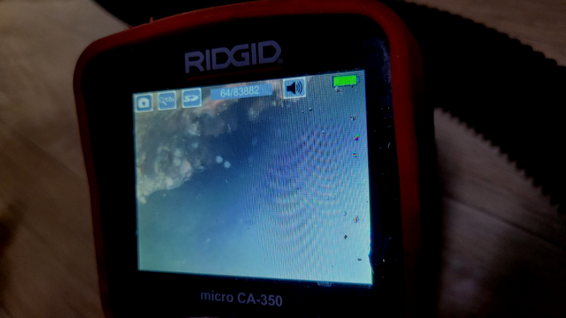
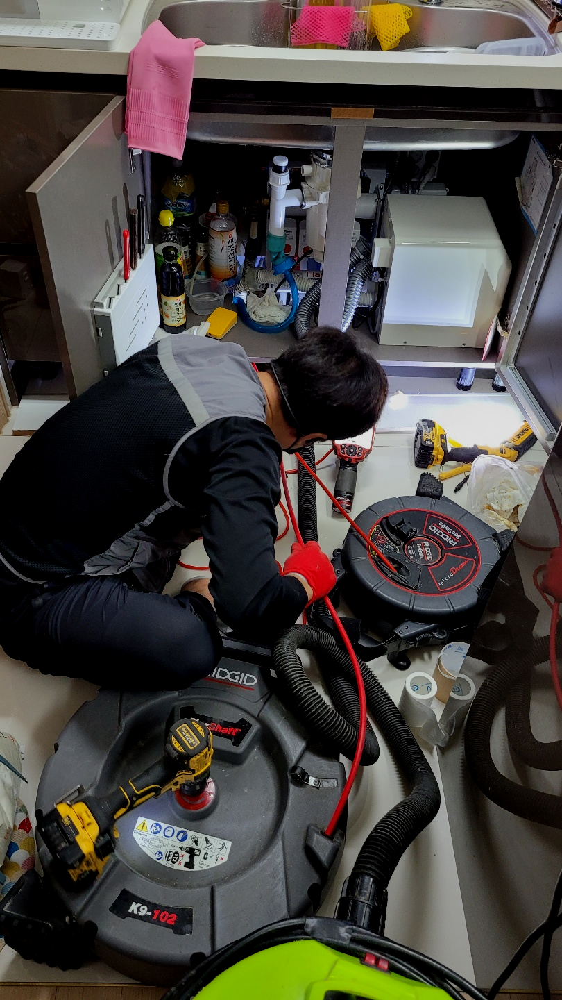
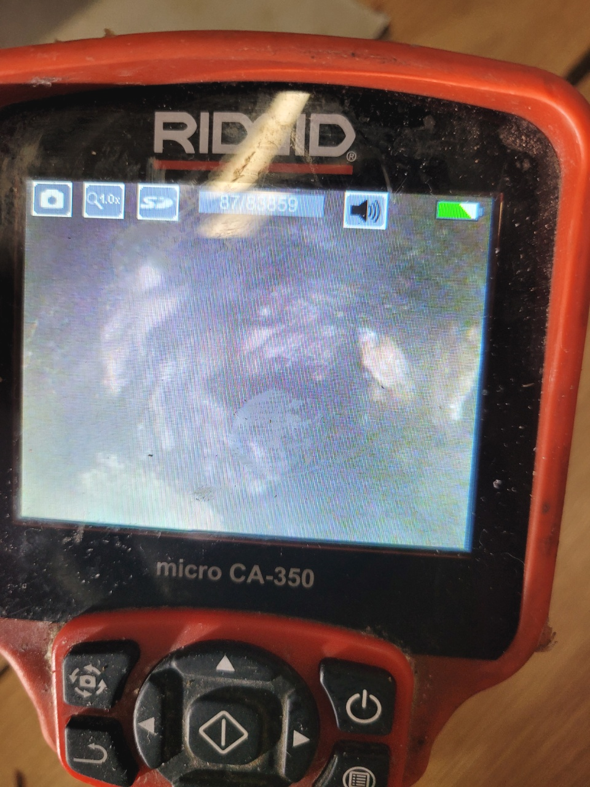
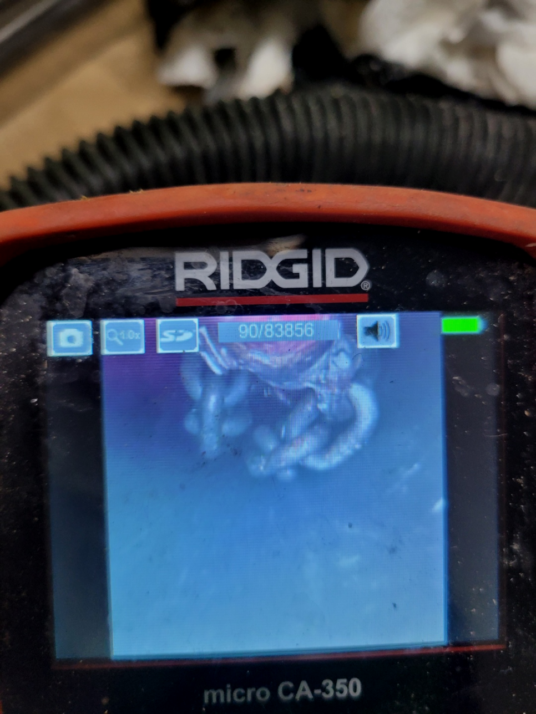
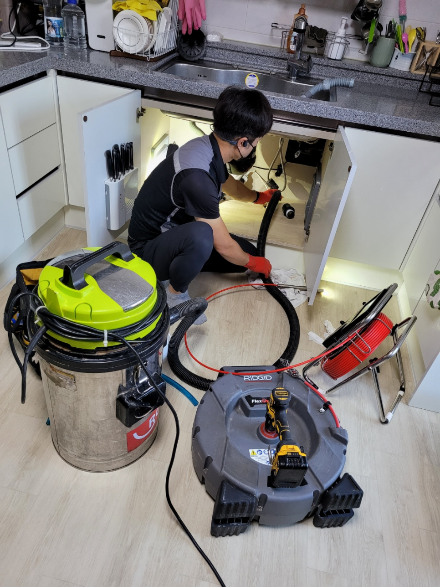
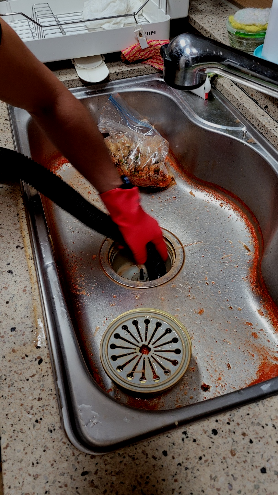

🏠 안성 석정동 씽크대하수구막힘 당왕동 하수구역류 뚫는곳 설비업체
안성 싱크대막힘 전문 시공 후기

📋 작업 개요
- 위치: 안성
- 서비스 유형: 싱크대막힘, 변기막힘, 하수구막힘, 배관막힘, 역류해결, 뚫는업체, 배관청소, 고압세척
- 작업 일시: 2023. 11. 21. 0:27
- 업체명: 하수구수사대 (010-5615-2118)
🔍 문제 상황
반갑습니다!
설비전문업체 "하수구수사대"를 찾아주셔서 감사합니다.
주변을 둘러보면 구매가능한 화학약품들로 막힌배수구 수리가안되면 무슨해결책으로 배수구배관을다시 원상태로돌릴수있을까요. 하수도로물이 내려가지않는다면 물사용에 문제가생기며 심각한상황에는 막막하실텐데요
저희는 배관나 배관에서 문제가 발생되었을 때 신속하게 현장으로 출동해 명확한 원인을 파악하여 꼼꼼하고 세심하게 작업을 해결해 나갑니다.
안성 석정동 씽크대하수구막힘 당왕동 하수구역류 뚫는곳 설비업체

🔎 원인 분석
💡 전문가 진단: 안성 석정동 씽크대하수구막힘 당왕동 하수구역류 뚫는곳 설비업체
가정집은 물론 상가처럼 큰 건물이나 업체 건물처럼 하수관자체가 큼지막한 곳도 자주 나가서 작업을 합니다. 가정집도 예외 없으면 준비성은 기본이고 금액에 관련해서 우려되시는 분들을위해 기본적으로 유선안내해 드리고 있습니다.
수도권 모든 지역에서 경력 있는 배수관기사님들이 대기하고 있기 때문에 계신 지역이 어디든지 방문 드릴 수 있으며 아무리 심각한 상황이라고 할지라도 빠르게 대처해 드리기 위해서 1시간 이내 도착을 약속하고 있습니다.
고압세척 장비는 저희와 같은 전문 업체를 통해서 사용을 할 수 있어서 보다 확실한 해결을 할 수 있게 됩니다. 퇴수막힘을 배관 내시경을 이용해서 내부의 상황을 보면서 고압세척을 하였는데요. 메인 배관이다 보니 배관의 길이도 길고 중간에 다시 이물질이 고이지 않도록 하는 작업이 필요했습니다.
고압세척 외에도 비싼 값의 기계는 어정쩡한 곳은 준비가 불가능하여 스케일이 있는 배출구작업을 해야 한다면 무조건 찾아보셔야 합니다. 그렇다고는 하지만 이 모든 것을 갖췄다고 성공하는 것은 아닙니다.
수많은 분들이 업체들을이 이용했어도 또 퇴수구막힘증상이 발생되어 반복적으로 더 돈을 내고 청소하게 되는것을 잘못 지여져 있는게 원인이 아닌 똑바로 세척하지 않은 것 때문입니다.
🔧 작업 과정
배출구막힘에는 락스나 뚫어뻥을 사용하더라도 효과가 없습니다. 외부의 이물질들로 인해서 배출구막힘이 발생을 하게 되면 물이 빠질 데가 없다 보니 이물질들을 빼내야 하는 만큼 이를 빠져나오게 되면서 역류를 하고 새게 되는 경우가 많이 있습니다.
슬러지가 막혀 있는 부분이 있었기 때문에 정비를 해드리기로 했습니다. 이곳처럼 단독 건물의 경우 하수 배관의 규격이나 상태가 좋은 편은 아니라서 슬러지가 단단하게 막히는 현상이 나타나면 작업이 쉽지 않은 편입니다. 그래서 오랜 경험을 가진 하수전문가에게 직접 진행을 맡겨야 하죠.
배수관전문업체를고르시는게 어째서 꼼꼼해야되냐면 제대로뚫기위해서인데요.의뢰하신업체가 잘못하는곳이면 대충보기만하고 가버리고 잠시동안 물이흐르게하고 나몰라라하기도해요.
이같은체계가 생겨난이유는 소비자분과의 신망을 지키기위해서 생긴것이고 이같은모토를 지키기위해 하수구에이물질이없게끔 하고있답니다.비용에대해서 알고싶으실수있는데요.배출관의어떤곳이 어느만큼 파손된건지에따라 견전가가정해지기때문에 정확하게 하시려면 내방해서 확인해보는게 정확한데요.
저희설비회사는 정직한것을 고집하고있으며 안좋은곳과 다르게 해결책을알려 드리고있어서 만족하실겁니다.퇴수막힘 위급하셔도 노하우가있으신분들이 고쳐드리고있어서 걱정되는생각은 덜어놓으셔도됩니다.
배출관막힘원인이 아침 식사때 드셨던 사골국이 원인일 것이라며 걱정하시는 고객님 말씀을 듣고 바로 플렉스 샤프트 작업을 진행했지만 생각보다 많은 양을 버리셨는지 배출관배관 청소를 여러 번 했는데도 물이 시원하게 빠지지 않아 석션 작업도 함께 병행해 드렸습니다.
저희 업체는 수시로 고객님들께 출동 건에 대한 후기들을 들려드리고 있으며, 많은 배수관막힘 고객님들께서 다시금 찾아주시는 경우도 있고, 확실한 일 처리로 많은 사랑을 받고 있습니다.
의뢰하기 전에 걱정하실 만한 것은 아마 하수뚫는 금액 부분일 것입니다. 얼마가 필요할지 가늠이 안되는데 의뢰하기에는 겁이 나기 때문에 멈칫하실 수 있으십니다. 이를 알기에 유선상으로 안내해 드립니다.


✅ 작업 완료
배출관문제 문의하시면 기본적인 금액 정도는 상담 가능하시니 의뢰하고 싶으시거나 더 늦어지기 전에 막힌 하수구를 뚫어보고 싶다면 편한 마음으로 통화 걸어주시면 되십니다.
#하수구막힘 #하수구뚫음 #하수구역류 #씽크대막힘 #싱크대역류 #오수관막힘 #하수구청소 #욕실하수구막힘 #변기막힘 #하수구뚫는비용 #싱크대수리 #화장실막힘




⚠️ 주방 싱크대 배관 막힘 예방 수칙
- ✅ 기름기가 묻은 식기나 프라이팬은 설거지 전 키친타올로 반드시 기름때를 닦아내세요.
- ✅ 주기적으로 싱크대 개수대에 뜨거운 물을 가득 받아 한 번에 내려 배관 내부 기름을 씻어내세요.
- ✅ 배수구 거름망을 미세한 필터로 사용하시고 음식물 찌꺼기가 틈으로 새어 들지 않게 관리하세요.
- ✅ 베이킹소다와 식초를 뜨거운 물과 함께 일주일에 한 번씩 부어주면 배관 살균과 막힘 예방에 좋습니다.
💡 핵심 정리
- 확실한 장비 작업(내시경 점검 및 샤프트 스케일링)으로 원인을 뿌리 뽑습니다.
- 작업 후 1년 이내에 동일한 부위 재발 시 100% 무상 A/S 서비스를 보장합니다.
- 서울 · 경기 · 인천 전 지역에 24시간 언제든 긴급 출동할 수 있도록 항시 대기 중입니다.
❓ 자주 묻는 질문 (FAQ)
🚨 안성 싱크대막힘 문제로 고민이신가요?
정확한 원인 진단과 확실한 시공으로 재발 없는 해결을 약속드립니다.
24시간 긴급 출동 | 서울 · 경기 · 인천 전지역 | 1년 내 재발 시 무상 A/S